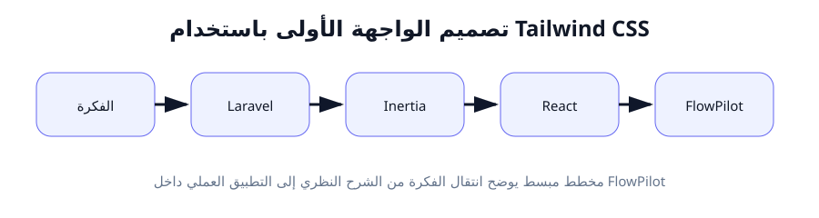
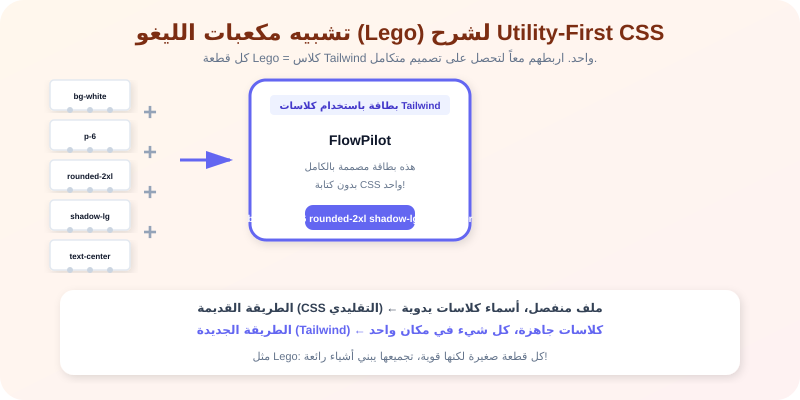

تصميم الواجهة الأولى باستخدام Tailwind CSS
"الجمال ليس رفاهية - الجمال يجعل المستخدم يثق بتطبيقك ويفهمه بشكل أسرع."
لماذا هذا الدرس مهم؟
الآن لدينا مشروع Laravel يعرض صفحة React. لكنها تبدو... عادية. بدون ألوان، بدون تنسيق، بدون جاذبية. هنا يأتي دور Tailwind CSS.
تخيل لو أن موقع FlowPilot يبدو وكأنه من التسعينيات - خطوط صغيرة، ألوان باهتة، أزرار مربعة. هل سيثق به المستخدمون؟ بالطبع لا. التصميم الجيد يبني الثقة.
Tailwind CSS هو إطار عمل (Framework) لـ CSS - لكنه ليس مثل أي إطار عمل آخر. بدلاً من كتابة قواعد CSS في ملف منفصل، تكتب "كلاسات" (Classes) جاهزة مباشرة في كود HTML/JSX. هذا يجعل عملية التصميم أسرع 10 مرات.
ما هو Tailwind CSS وماذا يعني Utility-First؟
CSS التقليدي (طريقة الكتابة القديمة)
<!-- في ملف HTML -->
<div class="card">مرحباً</div>
/* في ملف style.css منفصل */
.card {
background-color: white;
padding: 20px;
border-radius: 8px;
box-shadow: 0 4px 6px rgba(0,0,0,0.1);
}
المشكلة: تحتاج لفتح ملفين منفصلين (HTML و CSS)، وتكتب أسماء كلاسات يدوية. التعديل يحتاج للبحث عن الكلاس في ملف CSS.
Tailwind CSS (طريقة Utility-First)
{/* في JSX - كل شيء في مكان واحد */}
<div className="bg-white p-5 rounded-lg shadow-md
مرحباً
</div>
الميزة: كل شيء في مكان واحد. bg-white يعني خلفية بيضاء، p-5 يعني مسافة داخلية، rounded-lg يعني زوايا دائرية، shadow-md يعني ظل. لا حاجة لملف CSS منفصل!
مصطلحات Tailwind الأساسية (بالأمثلة الحية)
كل "كلاس" في Tailwind يتكون من: خاصية (Property) + شرطة (-) + قيمة (Value). مثلاً:
الألوان (Colors)
text-indigo-600: لون النص بنفسجي
bg-emerald-500: خلفية خضراء
border-rose-300: إطار وردي
الرقم (600, 500, 300) يحدد درجة اللون: 50 = أفتح، 900 = أغمق.
المسافات (Spacing)
p-4: padding 16px (داخلية)
m-2: margin 8px (خارجية)
px-6: padding أفقي 24px
py-3: padding عمودي 12px
كل رقم = 4px (1 = 4px, 2 = 8px, 4 = 16px, وهكذا).
الخطوط (Typography)
text-xl: حجم نص كبير
font-bold: خط عريض
font-black: خط عريض جداً
text-center: توسيط النص
leading-relaxed: تباعد الأسطر
التنسيق (Layout)
flex: تفعيل الـ Flexbox
grid: تفعيل الـ Grid
rounded-xl: زوايا دائرية كبيرة
shadow-lg: ظل كبير
w-full: عرض 100%
التصميم المتجاوب (Responsive) - يجعل موقعك يعمل على الجوال
في عالم اليوم، يجب أن يعمل موقعك على الجوال والتابلت والكمبيوتر. Tailwind يسهل ذلك باستخدام "مقدّمات" (Prefixes):
md:يعني "عندما يكون العرض Medium فأكبر". مثلاً:md:text-2xlيعني النص كبير على الشاشات المتوسطة والكبيرة.lg:للشاشات الكبيرة (Large).xl:للشاشات الكبيرة جداً.- بدون prefix: التطبيق الافتراضي للجوال (Mobile-first).
<div className="text-sm md:text-lg lg:text-2xl
هذا النص يتغير حجمه حسب حجم الشاشة!
</div>
هذا الكود يجعل النص صغيراً على الجوال (text-sm)، متوسط على التابلت (md:text-lg)، كبيراً على الكمبيوتر (lg:text-2xl).
مثال من الواقع: "مكعبات الليغو (Lego)"
CSS التقليدي يشبه أن تصنع لعبة من الصلصال (الطين). تشكله بنفسك، تضيف الألوان، تنتظر حتى يجف. إذا أخطأت، قد تحتاج لتكسير القطعة والبدء من جديد.
أما Tailwind CSS فهو مثل مكعبات Lego الجاهزة. لديك آلاف القطع الجاهزة بألوان وأحجام مختلفة. أنت فقط:
🧱
تختار القطعة
مثلاً: bg-white, p-6
🔗
تركبها مع الأخرى
دمج كلاسات متعددة
🎨
تبني الشكل النهائي
واجهة FlowPilot كاملة
تخيل أن تريد تغيير لون خلفية بطاقة من الأبيض للأزرق. في Tailwind: تغير bg-white إلى bg-sky-100. هذا كل شيء! في CSS التقليدي، كنت ستفتح ملف CSS، تبحث عن الكلاس، تغير القيمة، تحفظ، ترجع للصفحة.
كيف يخدم هذا الدرس مشروع FlowPilot؟
في FlowPilot، سنصمم العديد من الصفحات: لوحة التحكم (Dashboard)، صفحة تسجيل الدخول، قائمة المشاريع، وعرض المهام. كل هذه الصفحات ستحتاج إلى Tailwind لتبدو احترافية.
باستخدام Tailwind، يمكننا تصميم:
- بطاقات المشاريع (Cards) مع ظل وزوايا دائرية.
- أزرار تفاعلية تتغير ألوانها عند المرور عليها (Hover).
- شريط تنقل (Navbar) علوي يعمل على الجوال والكمبيوتر.
- نموذج إدخال (Form) بأناقة واحترافية.
بعد هذا الدرس، ستصبح قادراً على تحويل أي واجهة في FlowPilot من شكلها الافتراضي البسيط إلى تصميم جذّاب واحترافي.
التطبيق العملي خطوة بخطوة
الخطوة 1: فهم إعدادات Tailwind في مشروعنا
الهدف: التعرف على ملفات إعداد Tailwind التي أنشأها Breeze تلقائياً.
بفضل Breeze، Tailwind مثبت مسبقاً في مشروعنا. يوجد ملفان مهمان:
tailwind.config.js
ملف الإعدادات. يمكننا تخصيص الألوان والخطوط وإضافة محتوى مخصص.
resources/css/app.css
الملف الذي يستورد Tailwind. فيه ثلاثة أسطر: @tailwind base; @tailwind components; @tailwind utilities;
الخطوة 2: تخصيص ألوان FlowPilot في tailwind.config.js
الهدف: إضافة ألوان مخصصة لمشروع FlowPilot (مثلاً لون بنفسجي مميز).
import tailwindcss from '@tailwindcss/vite';
export default {
content: [
'./resources/**/*.blade.php',
'./resources/**/*.jsx',
],
theme: {
extend: {
colors: {
'flowpilot': {
500: '#6366f1', // لوننا البنفسجي
700: '#4338ca', // درجة أغمق
},
},
},
},
};
شرح التخصيص:
أضفنا لوناً جديداً اسمه flowpilot بقيمتين. الآن يمكننا استخدامه في JSX: bg-flowpilot-500 أو text-flowpilot-700. هذا يجعل ألوان مشروعنا فريدة ومتناسقة.
الخطوة 3: تصميم بطاقة ترحيب (Welcome Card) لـ FlowPilot
الهدف: إنشاء أول عنصر مصمم باستخدام Tailwind في صفحة Welcome.jsx.
افتح resources/js/Pages/Welcome.jsx واستبدل المحتوى بهذا الكود:
import { Link } from '@inertiajs/react';
export default function Welcome() {
return (
<div className="min-h-screen bg-gradient-to-l from-indigo-100 to-white flex items-center justify-center p-6">
<div className="max-w-md w-full bg-white rounded-3xl shadow-2xl p-10 text-center">
<h1 className="text-4xl font-black text-flowpilot-500 mb-4">
🚀 FlowPilot
</h1>
<p className="text-slate-500 text-lg leading-relaxed mb-8">
إدارة المشاريع بذكاء واحترافية
</p>
<button className="bg-flowpilot-500 hover:bg-flowpilot-700 text-white font-bold py-3 px-8 rounded-2xl transition-all duration-300 shadow-lg shadow-indigo-200">
ابدأ الآن
</button>
</div>
</div>
);
}
الخطوة 4: شرح كل كلاس Tailwind في الكود أعلاه
الكلاسات الخارجية (الحاوية الرئيسية):
min-h-screen: العنصر يأخذ على الأقل ارتفاع الشاشة بالكامل (100% من ارتفاع المتصفح).bg-gradient-to-l from-indigo-100 to-white: تدرج لوني من اليمين لليسار: من بنفسجي فاتح إلى أبيض.flex items-center justify-center: تفعيل Flexbox لتوسيط المحتوى أفقياً وعمودياً.p-6: padding 24px من جميع الجهات.
الكلاسات الداخلية (البطاقة):
max-w-md: أقصى عرض 448px (مناسب للجوال).w-full: العرض الكامل (لكن ضمن حدود max-w-md).bg-white: خلفية بيضاء.rounded-3xl: زوايا دائرية جداً (24px).shadow-2xl: ظل كبير جداً - يعطي عمقاً للبطاقة.p-10: padding 40px داخل البطاقة.text-center: توسيط كل النص.
الكلاسات (العنوان والنص والزر):
text-4xl: حجم النص 36px.font-black: الخط بعرض 900 (الأعلى).text-flowpilot-500: لوننا المخصص البنفسجي.mb-4: margin-bottom 16px.text-slate-500: لون نص رمزي.text-lg: حجم نص 18px.leading-relaxed: تباعد أسطر 1.625.mb-8: margin-bottom 32px.hover:bg-flowpilot-700: عند المرور بالماوس، يصبح اللون أغمق.transition-all duration-300: تأثير انتقال سلس لمدة 0.3 ثانية.shadow-lg shadow-indigo-200: ظل كبير مع لون بنفسجي فاتح للظل.
الخطوة 5: تصميم صف (Row) باستخدام Flexbox
الهدف: إنشاء صف يحتوي على 3 بطاقات جنباً إلى جنب - مثلما سنفعل في لوحة FlowPilot.
<div className="flex gap-6 flex-wrap justify-center">
<div className="bg-white p-6 rounded-2xl shadow-md w-48 text-center">
<p className="text-3xl mb-2">📋</p>
<p className="font-bold text-slate-800">مشاريع</p>
<p className="text-xs text-slate-400">12 مهمة</p>
</div>
<!-- كرر نفس البطاقة -->
</div>
شرح Flexbox:
flex يجعل العناصر تظهر جنباً إلى جنب (أفقياً). gap-6 يضيف مسافة 24px بين كل عنصر. flex-wrap يسمح للعناصر بالنزول لسطر جديد إذا ضاقت الشاشة. justify-center يوسّط الصف.
الخطوة 6: استخدام Grid layout
الهدف: تعلم Grid - طريقة أخرى لترتيب العناصر في صفوف وأعمدة.
<div className="grid grid-cols-1 md:grid-cols-2 lg:grid-cols-3 gap-6 p-6">
<div className="bg-indigo-50 p-6 rounded-xl">البطاقة 1</div>
<div className="bg-indigo-50 p-6 rounded-xl">البطاقة 2</div>
<div className="bg-indigo-50 p-6 rounded-xl">البطاقة 3</div>
</div>
شرح Grid:
grid تفعيل نظام الشبكة. grid-cols-1 = عمود واحد على الجوال. md:grid-cols-2 = عمودان على التابلت. lg:grid-cols-3 = 3 أعمدة على الكمبيوتر. gap-6 = مسافة بين الخلايا. هذا هو التصميم المتجاوب (Responsive)!
شرح تفصيلي: كلاسات Tailwind最常见 استخداماً
| الكلاس | المعنى | القيمة التقريبية |
|---|---|---|
| p-4 | Padding (مسافة داخلية) من جميع الجهات | 16px |
| px-6 | Padding أفقي (يمين + يسار) | 24px |
| py-3 | Padding عمودي (فوق + تحت) | 12px |
| m-0 | إزالة كل المسافات الخارجية | 0 |
| mx-auto | هامش أفقي تلقائي (يوسّط العنصر) | auto |
| text-sm / text-lg / text-2xl | حجم النص (صغير / كبير / كبير جداً) | 14px / 18px / 24px |
| font-medium / font-bold / font-black | سماكة الخط (متوسط / عريض / عريض جداً) | 500 / 700 / 900 |
| rounded / rounded-lg / rounded-3xl | درجة دوران الزوايا | 4px / 8px / 24px |
| shadow / shadow-md / shadow-2xl | حجم الظل حول العنصر | خفيف / متوسط / كبير |
| flex / grid | تفعيل نظام التخطيط | Flexbox / Grid |
| hidden / block / flex | إخفاء أو إظهار العنصر | display |
| hover:bg-* | تغيير عند المرور بالماوس | حالة التفاعل |
| md: / lg: / xl: | مقدّمات للشاشات المختلفة | Responsive breakpoints |
النتيجة المتوقعة
بعد تطبيق كود Tailwind، يجب أن ترى:
- ✓ صفحة Welcome بتدرج لوني بنفسجي-أبيض رائع
- ✓ بطاقة بيضاء بزوايا دائرية وظل في منتصف الشاشة
- ✓ عنوان "FlowPilot" بلون بنفسجي مميز بحجم كبير
- ✓ زر تفاعلي يتغير لونه عند المرور بالماوس
- ✓ الصفحة متجاوبة (تبدو جيدة على الجوال والكمبيوتر)
الأخطاء الشائعة في Tailwind
1. الكلاس لا يعمل (التصميم لا يظهر)
السبب: إما أن Tailwind لم يتم تشغيله (انتهى من Vite) أو أن الكلاس مكتوب بشكل خاطئ.
الحل: تأكد من تشغيل npm run dev. تأكد من عدم وجود أخطاء إملائية في الكلاس. Tailwind يعتمد على التطابق التام.
2. تنسيق النص لا يعمل (نفس الحجم دائماً)
السبب: ربما تستخدم className بدلاً من class في HTML عادي (لكن في JSX، className هو الصحيح). أو قد يكون هناك تعارض مع CSS آخر.
الحل: تذكر أن في React نستخدم className وليس class. تحقق من عدم وجود CSS مخصص يلغي كلاسات Tailwind.
3. اللون flowpilot-500 لا يعمل
السبب: لم تقم بتخصيص tailwind.config.js بشكل صحيح، أو أن Vite لم يعيد تشغيله.
الحل: تأكد من أن ملف tailwind.config.js موجود في جذر المشروع ويحتوي على ألوان flowpilot. أعد تشغيل npm run dev بعد الحفظ.
4. الصفحة لا تستجيب (تبدو كالجوال على الكمبيوتر)
السبب: لم تستخدم مقدّمات Responsive (md:, lg:).
الحل: أضف md:grid-cols-2 أو lg:text-2xl حسب احتياجك. بدونها، التصميم يكون للجوال (Mobile-first).
5. مشكلة المسافات (Spacing) - كل شيء ملتصق
السبب: نسيت إضافة padding أو margin أو gap.
الحل: استخدم space-y-4 لإضافة مسافة عمودية بين عناصر متجاورة في نفس الحاوية. أو استخدم gap-4 مع flex/grid.
مخططات توضيحية

علاقة كلاسات Tailwind بالخصائص CSS الفعلية

تشبيه مكعبات الليغو لـ Utility-First CSS
ملخص الدرس
ماذا تعلمنا؟
- • Tailwind = Utility-First CSS framework
- • كلاسات مثل bg-white, p-4, text-lg, rounded-xl
- • Flexbox و Grid لترتيب العناصر
- • Responsive prefixes (md:, lg:)
- • تخصيص الألوان في tailwind.config.js
مفاهيم مهمة
- • Utility = كلاس واحد يطبق خاصية CSS واحدة
- • Mobile-first = التصميم يبدأ من الجوال ثم يكبر
- • Hover = حالة التفاعل عند المرور بالماوس
- • Shadow = ظل يعطي عمقاً للعناصر
الخطوة القادمة
الدرس الرابع: Git. سنحفظ كل ما أنجزناه حتى الآن في أول commit رسمي لـ FlowPilot.